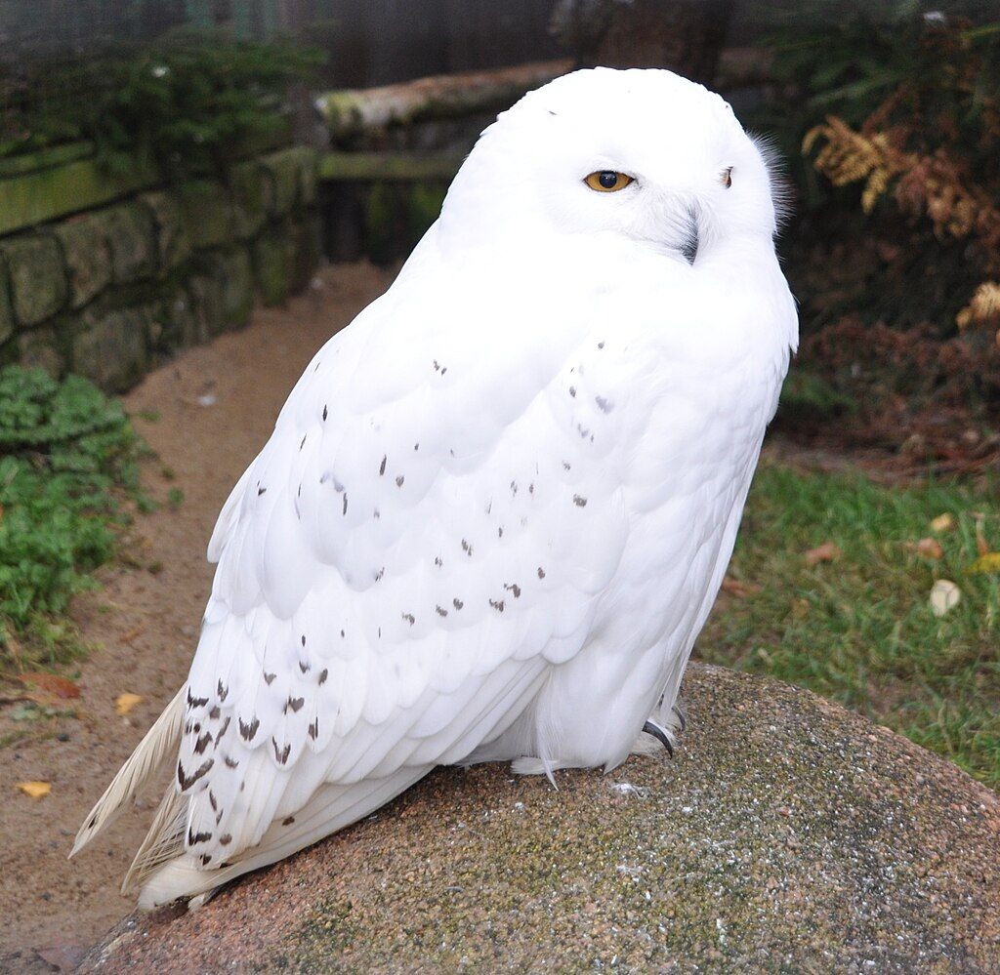
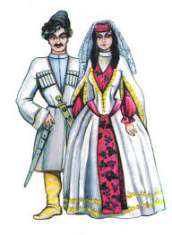

თეთრი ბუ (Bubo scandiacus, სინონიმები Bubo scandiaca, Nyctea scandiaca) — ფრინველი ნამდვილ ბუსებრთა ოჯახისა.
მერიკის, ევროპისა და აზიის ტუნდრის ზონაში და ჩრდილოეთ ყინულოვანი ოკეანის ზოგიერთ კუნძულზე. მომთაბარეა, ზამთარში ველების ზონამდე ინაცვლებს. თეთრ ბუმბულზე მეტ-ნაკლებად შესამჩნევი მურა ლაქები აქვს. მისი სხეულის სიგრძეა 55-65 სმ, ფრთების შლილი — 150-160 სმ, წონა — 1,5-2,5 კგ. კვერცხებს (3-11) დებს მაისის შუა ან ბოლო რიცხვებში ხავსით ამოფენილ
ორმოში. კრუხობს ერთ თვემდე. იკვებება ლემინგებით და მათ რაოდენობაზეა დამოკიდებული თეთრი ბუს გამრავლების ინტენსივობაც.

linux
Linux (/ˈlɪnʊks/, LIN-uuks)[15] is a family of open-source Unix-like operating systems based on the Linux kernel,[16] an operating system kernel first released on September 17, 1991, by Linus Torvalds.[17][18][19] Linux is typically packaged as a Linux distribution (distro), which includes the kernel and supporting system software and libraries — many of which are provided by the GNU Project — to create a complete operating system.
Many Linux distributions use the word "Linux" in their name, but the Free Software Foundation uses and recommends the name "GNU/Linux" to emphasize the use and importance of GNU software in many distributions, causing some
ქართული კუთხეების ტრადიციები
სუფრის უფროსი
კვება და კერძები ქართული ტრადიციების უმნიშვნელოვანესი ნაწილია, ასევე განუყოფელი ნაწილია „სუფრა“ და „სუფრის თამადა“. ქართული სუფრის გამძღოლი. ჩვეულებრივ თამადად იწოდება და მას ევალება ტრადიციული სადღეგრძელოების წარმოთქმა, სმის წესების, სუფრის წესრიგის დაცვა. ყოველი სადღეგრძელოს ინტერპრეტაცია ხდება მაგიდის წევრების მიერ და არცერთმა მათგანმა ღვინო სადღეგრძელო გარეშე არ უნდა დალიონ.
ორი ახალი წელი
ახალი წლის შემობრძანება ერთ-ერთი ყველაზე მნიშვნელოვანი დღესასწაულია საქართველოში. ქართველები ორ ახალ წელს აღნიშნავენ. ახალ ახალ წელს 1 იანვარს, ხოლო ეგრეთ წოდებულ „ძველით ახალ წელს“ - 14 იანვარს. 2 იანვარს არის "ბედობა", საქართველოში ეს ტრადიცია უკვე საუკუნეებს ითვლის. ძველ დროში მიჩანდათ, რომ როგორც შეხვდებოდნენ ამ დღეს, მთელი წელი ისე გაატარებდნენ. ეს ტრადიცია დღესაც გრძელდება, რომლის თანახმად, ბედობას ყოველთვის ხალისიანი განწყობით უნდა შეხვდეთ.
შობა იანვარში
როგორც სხვა ბევრ მართლმადიდებლურ ქვეყანაში, ქართველები შობას 7 იანვარს აღნიშნავენ, რაც გრიგორიანული კალენდრით 25 დეკემბრის ტოლფასია. შობას იმართება ალილო და მრავალი ადამიანი სპეციალურ ფორმებში გამოწყობილი იღებს მონაწილეობას აღნიშნულ მსვლელობაში.

masha and bear
სერიალი პატარა გოგონაზეა, რომელსაც სახელად მაშა ჰქვია. ის არავის აძელვს მოსვენებას, პირველ რიგში კი მის მეგობარს - დათვს.
ანიმაციური სერიალი ნათარგმნია 25 ენაზე, და ნაჩვენებია 100-ზე მეტ ქვეყანაში. სერიალის ერთ-ერთმა ეპიზოდმა YouTube-ზე ორ მილიარდზე მეტი ნახვა დააგროვა, რაც მეხუთე ადგილია მსოფლიოში.
სერიალი შედგება სრული სამი სეზონისგან. თითო სეზონში შედის 26 ეპიზოდი. ამ დროისთვის გამოსულია ხუთი სეზონი.